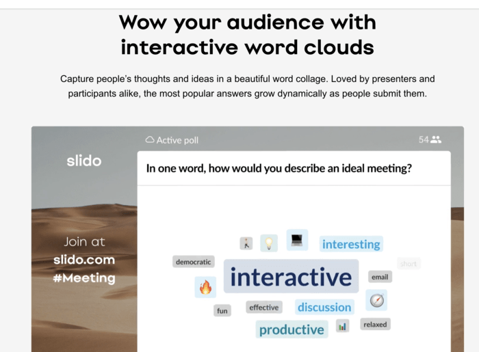

I really liked the animations that they used when the words change, though I'm unsure of how I would go about making that work for my project.
source This is a more modern interpretation of a word cloud that uses live polls to fill it out, which goes along with vaguely what I wanted to do, but I'm unsure how the tool works.
source